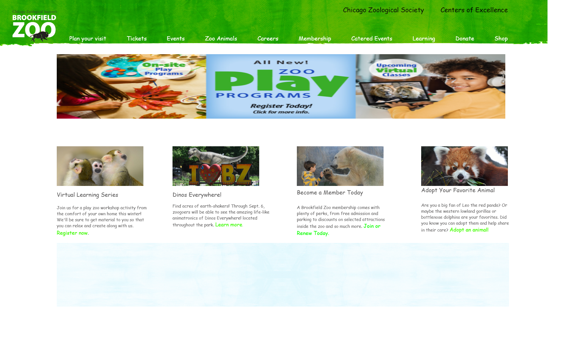
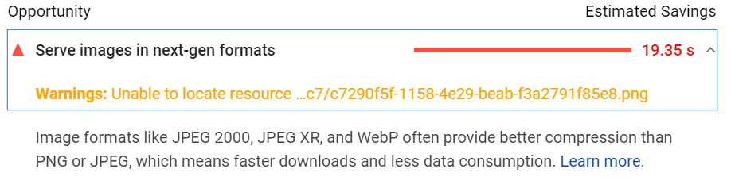
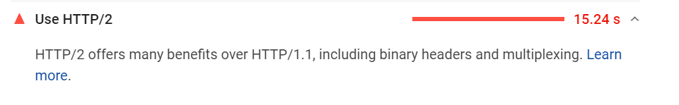
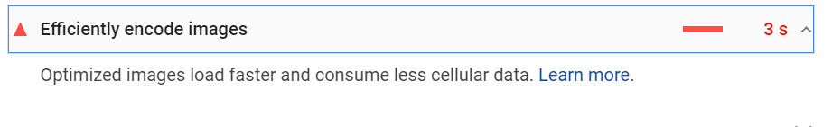
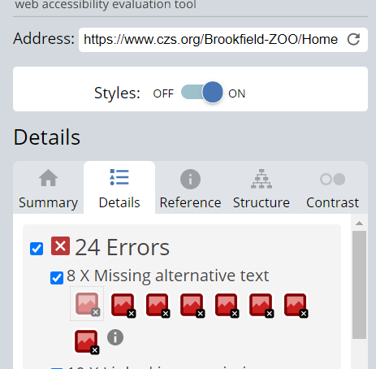
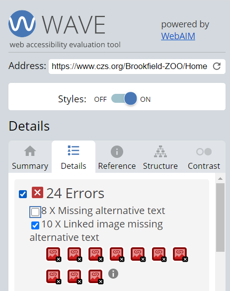

Lab - 02 - Alex Danielson - 2021-CWEB1010-01 - 03/05/2021
Broodfield Zoo Wireframe
Lab 2 Steps:
1.) Create a high-fidelity wire-frame of Brookfield Zoo (Links to an external site.) homepage using Adobe XD.
A.) Prioritize the site's content by determining of how much space to allocate to a given item and where that item is located.
B.) Visualize structure and formation of how content will be presented.
C.) Use graphics and color scheme presented within the Brookfield Zoo website to craft your wire-frame. Your wire-frame should look similar to the actual site.
2.) Usability: Provide 2 specific recommendations for improving the site performance as it relates to how fast the homepage renders in the browser. Please refer to the slides on some of the tools you can use to assess site speed.
3.) Accessibility: Provide 2 specific recommendations for improving the accessibility of the site. Consider using the WAVE accessibility tool to determine recommendations.
Brookfield Zoo high-fidelity Wireframe

Speed/Performance Recommendations
Recommendations for Site Optimization
All recommendations come from test run on Google PageSpeed Insight.

1.) Update image delivery formats. Using old outdated formats results in slower download times, more data compression, and less than desireable compression.

2.) Update website to HTTP/2. This will result in faster delivery of website content, cutting down RTT (Round Trip Time) without the need for optimization. In addition to this HTTP/2 allows for better compression of website, has a lighter network footprint and is less prone to errors.

3.) Efficiently encode images in website. Can be done by using optimization tools such as squoosh, joomla, magneto, or wordpress.
Recommendations for Accessibility
All recommendations come from results provided by WAVE.

1.) Missing alt. text for images. Alternate text allows users to understand what is on the page should the image not load correctly or not at all, by providing a brief description of that image the user can comprehend what is being conveyed on the page.

2.) As mentioned in recommendation 1, there is no alternate text provided for any linked images. This is a major draw back for users and is a quick fix, that will greatly improve accessibility.